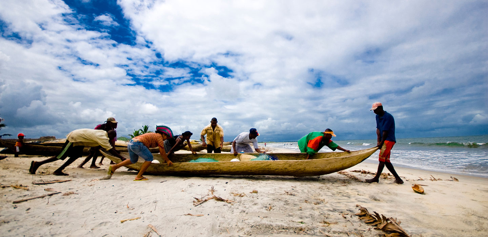

My Experiences and Experiments!
Use the links below to view past projects
-
 Day of the African Child
Day of the African Child
I created this website for a Non-Governmental Organization to raise awareness about the challenges faced by African children -

The Blue Economy
I created this website for the Ministry of Fisheries Kenya to educate Kenyans and outsiders of the opportunities in the country's blue economy